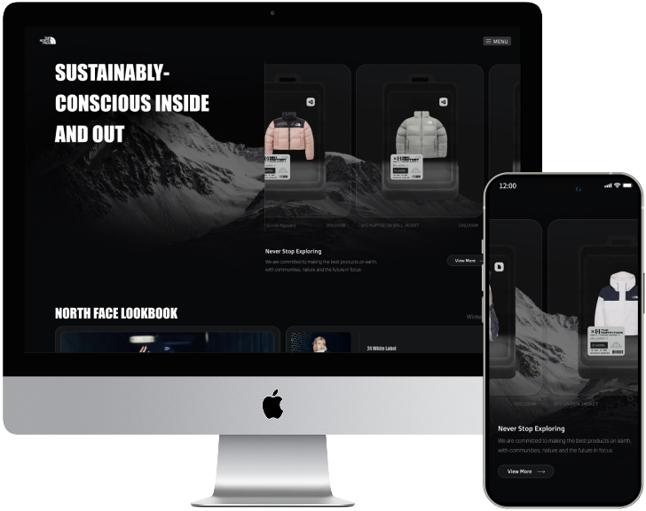
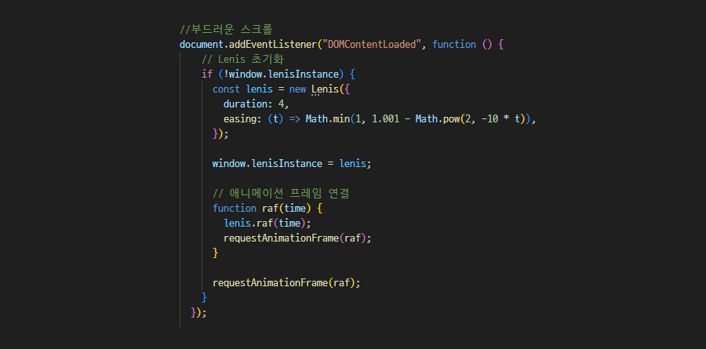
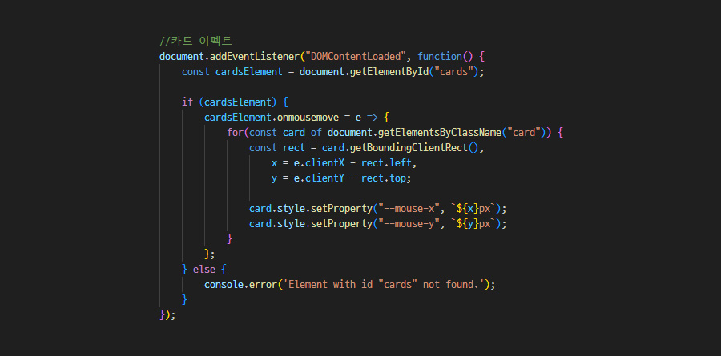

North Face Redesign
노스페이스 웹사이트 리디자인 프로젝트
기여도 : 개인 프로젝트 (100%)
제작 기간 : 6일 (디자인 2일 + 퍼블리싱 4일)
툴 : Figma, Photoshop, Visual Studio Code



Project Vision
노스페이스가 현재 가지고 있는 브랜드 이미지에 비해 현재의 노스페이스 웹페이지는 다소 심심하다는 생각이 들었습니다. 따라서 노스페이스 브랜드의 이미지를 강조하고, 스크롤 이벤트 등 동적인 움직임을 통해 사용자에게 즐거운 웹 탐색 경험을 제공하고자 하였습니다.
- 01 노스페이스 브랜드가 가진 세련되고 트렌디한 이미지를 강조
- 02 다양한 동적인 움직임을 통한 흥미 유발과 즐거운 경험 제공
- 03 불필요한 레이아웃 수정과 사용자 경험을 고려한 직관적인 레이아웃 제공
Design System
Typography
Color
-
#08090B
-
#444545
-
#DADADA
-
#FFFFFF
노스페이스의 세련되고 트렌디한 이미지를 강조하기 위해 컬러는 최소화하고, 임팩트있는 영문 폰트로 포인트를 주었으며, 기본 폰트는 pretendard를 이용해 가독성을 높였습니다.
Publishing
부드러운 스크롤
스크롤 애니메이션
커서 트래킹
스와이퍼 활용

Lenis 스크롤 라이브러리를 활용하여 스크롤이 부드럽고 자연스럽게 이동하도록 하였습니다. 이를 통해 사용자에게 더욱 쾌적한 웹 탐색 경험을 제공하고자 하였습니다.
스크롤에 따라 자연스럽게 애니메이션 효과를 적용하여 사용자에게 보더 동적인 경험을 제공하며, 스크롤 이벤트 처리 최적화를 통해 성능 저하 없이 부드러운 전환 효과를 구현했습니다.

커서의 위치에 반응변경하는 효과를 추가하였습니다. 어두운 무채색 계열의 컬러를 사용하여, 이 효과가 더욱 돋보일 것이라고 판단하여 사용자의 흥미를 자극하고자 하였습니다.